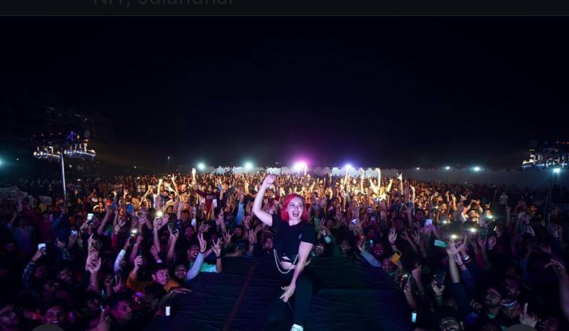

TECHNITI
TechNITi is the techno-managerial student fest of Dr. B. R. Ambedkar National Institute of Technology (NIT), Jalandhar in Punjab, India. techNITi, the annual fest, has emerged as one of the region’s most sought after event.
TechNITi is just not an event but a celebration of colors of innovation and management and aims to foster the entrepreneurial spirit among the students fraternity. TechNITi is an expression of excellence, a platform that aims to be the stepping stone for innovative ideas and to turn them into an opportunity to revolutionize the world.